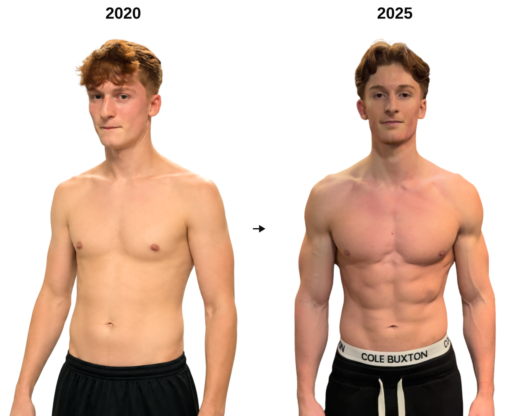
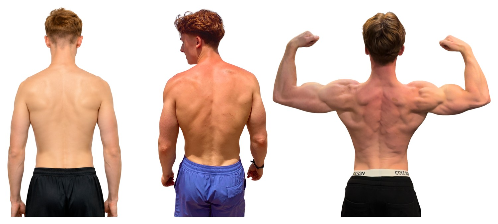
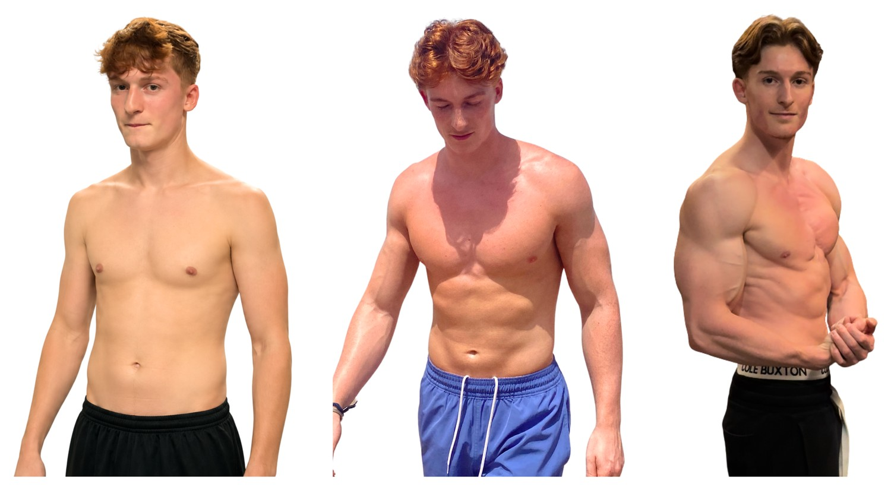

Optimise les 6 simultanément. Chaque pilier amplifie les autres.
L'apparence extérieure reflète ce que tu construis de l'intérieur. Protocoles minimalistes.
Conçue pour réguler le rythme circadien, maintenir une énergie et productivité élevée et maximiser la qualité du sommeil.
Deux ressources pour démarrer immédiatement.
Google Sheet pour suivre tes 6 piliers semaine par semaine.
20 minutes en visio. J'identifie ton blocage principal et l'ordre exact de tes 3 prochains changements.
Healthy lifestyle · Business creation · Voyage & expériences · Communauté franco-anglophone privée
Where ambitious men build their highest-performing life.
20 minutes en visio. J'identifie ton blocage principal et l'ordre exact de tes 3 prochains changements. Si ce n'est pas le bon moment pour toi, je te le dirai.
Réserver mon appel diagnosticPlaces limitées · Coaching 1-1 uniquement
Avertissement. Ce plan est basé sur mon expérience personnelle et mes recherches. Il ne remplace pas un avis médical professionnel. Consulte un médecin avant tout changement significatif. Les résultats sont individuels.